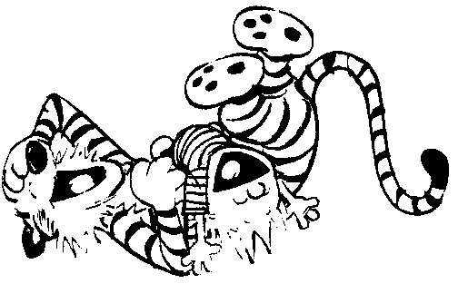

Blessed are they who can laugh at themselves, for they shall never cease to be amused.
Editor's note: I saved these stories largely from things I found on the Internet and hope no one is upset with me for printing them here. There are simply so many good stories out there, that I wanted to archive them, since we all could use a good laugh from time to time. I included the name of the writer if I knew it, to try and give credit where credit is due. If anyone wants their story removed (or just their name) please contact me at dbartzur@earthlink.net and my apologies in advance to any one who will do so. You may also send me submissions that you would like me to add to this page or supply your name, if it is missing in a story I alread have.
Note: If a link is followed by this icon: , it contains videos in ASL or other Sign Languages.
, it contains videos in ASL or other Sign Languages.
 Codas (Children of Deaf Adults)
Codas (Children of Deaf Adults)
General Deaf humor and musings
Getting serious about Deaf humor
In a spell. A fingerspell, that is.
The incredible lightness of being... a VRS interpreter
Interpreters (and translators) in other languages
Is there an interrupter in the house?
Technically speaking... er, signing
The strange world of the Hearing
Unusual interpreting assignments
Your ass-essment is on the line
Decher, M. (ed.) (3 December 1999). Our stories: The soul of Sign Language interpreting. Mass Market Paperback, Gifts and Publications. ISBN: 0967399815.
interpreterhumor. This is a group for interpreters to share their stories about the humor and well intentioned mihaps that can sometimes occur in interpreting. All stories must be in good taste and reflect real life interpreter situations. They must also be told with respect and dignity for all cultures, people, languages and countries discussed. It is a place for the interpreter to relax and enjoy some of the fun things about the job with other professionals. Welcome!
Miller, K. & Goff Paris, D. You might be a Sign Language interpreter if. . . AGO Gifts and Publications. 56 pages with 23 humorous takes on life in the sign language field with black and white illustrations drawn by deaf cartoonist Bruce Hanson.
Vicars, B. Jokes.